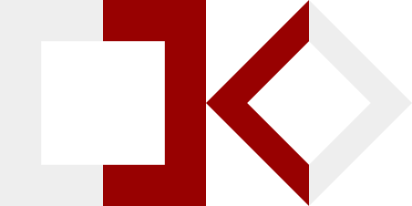

<!DOCTYPE html>
<!DOCTYPE html PUBLIC "-//W3C//DTD XHTML 1.0 Transitional//EN" "http://www.w3.org/TR/xhtml1/DTD/xhtml1-transitional.dtd">
<html>
  <head>
    <meta charset='utf8' />
    <link href='stylesheets/screen.css' media='screen, projection' rel='stylesheet' type='text/css' />
    <link href='http://fonts.googleapis.com/css?family=Didact Gothic' rel='stylesheet' type='text/css' />
    <script src='http://ajax.googleapis.com/ajax/libs/jquery/1.6.4/jquery.min.js' type='type/javascript'></script>
    <script src='js/main.js' type='type/javascript'></script>
  </head>
</html>
<body>
  <title>kaosCV</title>
</body>
<body class='bp two-col'></body>
<div class='showgrid' id='container'>
  <div id='header'>
    <div id='info'>
      <div class='name'>Kasper Jordaens</div>
      <div class='date'>º1981</div>
      <div class='twitter'>@kaosbeat</div>
      <div class='phone'>+32474436640</div>
      <div class='meta'>lives with Sarah, has 3 kids</div>
    </div>
    <div id='logo'>
      
    </div>
  </div>
  <div id='sidebar'>
    <div id='education'>
      <h2>Education</h2>
      <ul class='columnlist'>
        <li>
          <div class='date'>1999-2005</div>
          <div class='title'>Master Civil Engineer Architect</div>
          <div class='place'>Ghent University</div>
        </li>
        <li>
          <div class='date'>2002-2003</div>
          <div class='title'>erasmus exchange</div>
          <div class='place'>Ecole d'architecture Paris la Vilette</div>
        </li>
      </ul>
    </div>
    <div id='work'>
      <h2>Work experience</h2>
      <ul class='columnlist'>
        <li>
          <div class='date'>2009-current</div>
          <div class='title'>Researcher internet innovation</div>
          <div class='place'>VRTmedialab</div>
          <div class='description'>In my current position I explore new Internet related technology and try to materialize those concepts into new media experiences.</div>
        </li>
        <li>
          <div class='date'>2005-2009</div>
          <div class='title'>Designer - Engineer</div>
          <div class='place'>Studio Wim Delvoye</div>
          <div class='description'>In my first full time job I have evolved from assistant designer to project manager. As an engineer and designer I assisted the artist in accomplishing complex designs where technical aspects had to be accommodated in the aesthetic needs. I also outsourced certain aspects and streamlined the workflow both in studio as at the production sites.</div>
        </li>
        <li>
          <div class='date'>2011-current</div>
          <div class='title'>founder-owner</div>
          <div class='place'>Kaotec</div>
          <div class='description'>In 2011 I founded a company to professionalize what I had been doing after office hours, getting slightly impossible ideas of the ground by adding suitable technology in a way you hadn't imagined before.</div>
        </li>
      </ul>
    </div>
  </div>
  <div id='content'>
    <div id='references'>
      <h2>some achievements</h2>
      <ul class='widelist'>
        <li class='rowing'>Junior world championship rowing, 4- B-final, Linz 1998</li>
        <li class='movie'>'Radorevant', movie, direction &amp; script, Paris 2003</li>
        <li class='performance'>'Noisefest', dynamic visuals (actionscript) &amp; live sound (pure data) performance, Gent 2005</li>
        <li class='wd'>'Tattooed Pigs', development of a multi-angle video installation for Wim Delvoye, Lyon, Paris, Montreal, ... 2005-2008</li>
        <li class='wd'>'Chapel', design of a sheet steel structure for Wim Delvoye in MuDAM, Luxembourg 2006</li>
        <li class='wd'>'Pretzels', design and modelling of bronze sculptures for Wim Delvoye, Ghent 2006</li>
        <li class='house'>Londenstraat 40, house, architectural design, Ghent 2007</li>
        <li class='wd'>'Tower', design of a sheet steel structure for Wim Delvoye, 2008</li>
        <li class='wd'>Training CAD-assistents in Shanghai for Wim Delvoye, Shanghai 2008</li>
        <li class='wd'>'Torre', project management and design of a sheet steel structure for Wim Delvoye, Guggenheim Venice 2009</li>
        <li class='brt'>'#DeKoers', design of an interactive realtime webapp for Sporza, 2010</li>
        <li class='cj'>'Children of Minkowski', Collaborative Art Project, Caeyers &amp; Jordaens Gent 2010</li>
        <li class='raket'>'Tetanus 1', a 9m high rocket build from scrap, co-design/build 2010</li>
        <li class='brt'>'Llingo', Workpacket leader for Llingo, IBBT project, 2009-2011</li>
        <li class='brt'>'Blending CGI with real 3D', workshop at BARCO and euroitv2010 for VRT, 2010</li>
        <li class='brt'>'OGOM', 2nd screen apps for realtime interaction with live TV for VRT, 2010</li>
        <li class='brt'>'Mediasquare/villasquare', 2nd screen platform and apps for mainstream TV-show VRT, 2011</li>
      </ul>
    </div>
  </div>
  <div id='background'>
    <div class='lines'></div>
  </div>
  <div id='footer'></div>
</div>
